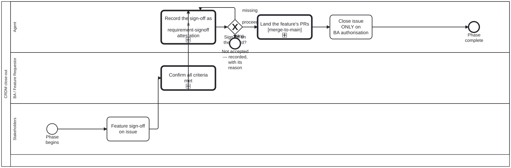

Generated from
cat-harness/processes/process/crdm-close.bpmnbygen-processes-viz.ts— do not edit here. All processes
Process_CRDM_Close · strict · 5 step(s)
The stakeholders sign off, the BA confirms every criterion is met, the feature lands on main through the merge-to-main sub-process, and only then does the agent close the issue. Never the other way round: an agent must never assume completion.

| lane | role | what it does here |
|---|---|---|
| BA / Feature Requestor | business-analyst |
Stands between stakeholder sign-off and the agent’s close as an independent check against defined criteria — decision-audit, not a re-ask of the same yes/no the stakeholders already gave — and A_Close’s own documentation says it is reachable ONLY through this confirmation, so the agent has no path to closing that bypasses it. |
| Agent | authoring-agent |
Holds no judgement in this diagram: both prior lanes already decided — sign-off, then confirmation against criteria — so this lane’s only accountability is executing the close exactly when authorised and never before, on an issue that is the stakeholder’s record rather than the agent’s to close on its own reading of the thread. |
| Stakeholders | stakeholder |
The first of three sequential checks this diagram exists to enforce in order — sign off, confirm, close, never any other sequence — and what is being signed off here is the delivered FEATURE on the issue, not the requirement model that crdm-requirements-definition.bpmn’s Lane_Stakeholders approved earlier in the process. |
Every one of the 5 step(s) is documented.
| step | lane | skill / sub-process | what it does |
|---|---|---|---|
Feature sign-off on issueS_FeatureSignoff |
Stakeholders | — | Stakeholders sign off on the delivered feature on the issue, having tested the built artefact rather than a description of it. |
Confirm all criteria metBA_Confirm |
BA / Feature Requestor | calls Adjudicationadjudication |
The business analyst confirms every acceptance criterion from the requirements is met. The issue closes only on their authorisation — an agent never closes an issue on its own say-so. Since issue #2405 (FR-013) it IS an adjudication with the requirement-set answers: an approval here moves the set to accepted, which check:requirements refuses unless it is a human’s and every approved member is in-force. |
Record the sign-off as a requirement-signoff attestationA_RecordSignoff |
Agent | adjudication |
THE RECORD, and not relaxable: a judgement nobody wrote down is indistinguishable from one never made (adjudication, A_RecordEntry). Append one requirement-signoff record to test/attestations/requirement-signoff/<set slug>.attestations.json — who (kind, id, actor), at, scope (the set or one member), the outcome from the requirement-set code list, the stage it moves the set to, the reason, and the permalink to the issue comment where it was decided — and set the set’s stage to match. Issue #2405 FR-011 / FR-012.GW_SignoffRecorded after this reads the record back, so this step cannot be skipped by completing it: a sign-off that left no attestation loops here again. |
Land the feature’s PRsCall_MergeToMain |
Agent | calls Merge to mainmerge-to-main |
Phase 6’s “explicit confirmation before merging to main”, made a step that can refuse. Once per pull request the feature still has open, after the sign-off is recorded and before the issue is closed: an issue is not closed on a feature that is not on main. merge-to-main.bpmn reads each head’s evidence live, establishes that the owner authorised THAT merge (a stakeholder sign-off or the BA’s confirmation is acceptance of the feature, not authorisation to merge it, unless the owner’s own words say so), records the authorisation, merges, and confirms the base. A PR the owner holds or refuses stays open, and A_Close then waits: the BA’s authorisation to close does not cover a feature that did not land. An increment the owner asked to land earlier in Phase 6 went through the same sub-process at that time. |
Close issue ONLY on BA authorisationA_Close |
Agent | crdm-requirements-workflow |
Reachable only through BA_Confirm, which is the BA saying every criterion is met. An agent must never close an issue without that explicit authorisation — the gate is the preceding task, and this name says so rather than leaving a reader to trace the flow for it. |
Every one of the 1 decision(s) is documented.
| decision | what decides it | branches |
|---|---|---|
Sign-off on the record?GW_SignoffRecorded |
Computed, never chosen: decisions/requirement-signoff-recorded.dmn reads signoffRecorded and signoffOutcome, which check:requirements prints from the set’s recorded sign-offs (its signoff-facts flag). missing loops back to the record; proceed is an approval (as written or amended); stop is a recorded reject, defer or cancel. |
proceed → Land the feature’s PRs stop → Not accepted — recorded, with its reason missing → Record the sign-off as a requirement-signoff attestation |